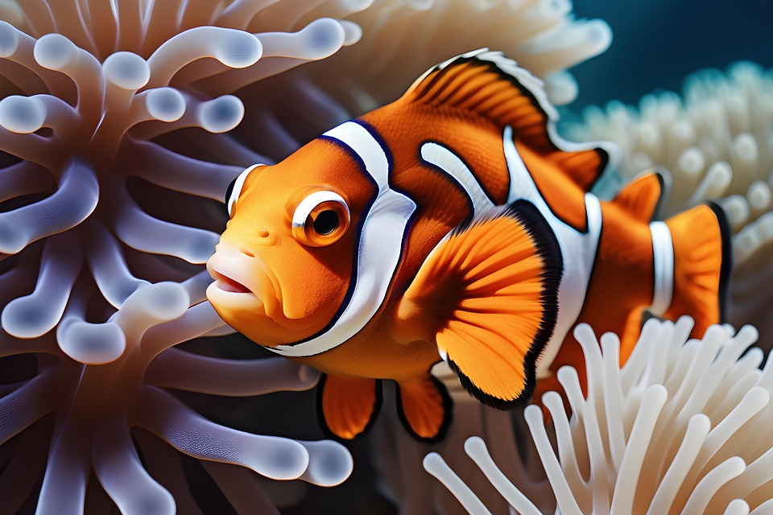

The New Way to Catch a Fish
No More Hooks = More Fish in the Sea to Release

It all started when my father caught a fish in front of me at the age of 4. The blood. The mess. The hook. It was all too hard to watch. I asked my father why we have to kill the fish when we have food at home. He replied, "Because it's the only way I know how to catch a fish." From that day forward, I was determined to find a new way to capture a fish without injuring them. I tried numerous methods on fake fish to see what would work. Eventually, the glass dome fishing rod came to life, and the rest is history!
